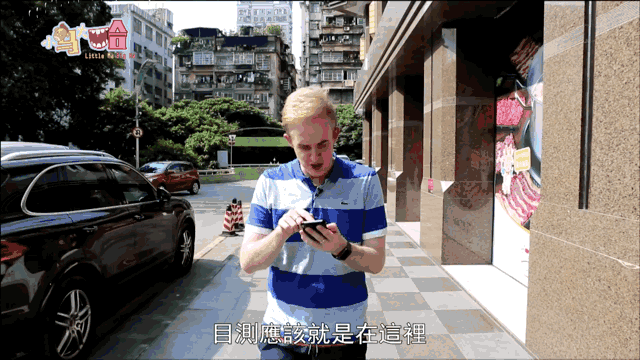

廣東的無人商店，連外籍新聞主播都說不可思議！
想必大家在網上看過很多,新聞主播們在直播時,發生各種囧況的的搞笑視頻.
Bloopers by news anchors are some of the most popular videos on foreign video sharing websites.
而我們的新聞主播大哈,最近也出了一次囧況,到底是什麽讓他在直播途中,大吃一驚？甚至還跑出了直播間？
Our very own Big Ha encountered his own “blooper” recently while reading the news. So, what surprised him so much that caused him to storm out of the studio half way through a broadcast?
好吧，其實大哈你一點都不囧,因爲他播報了一條關于廣州無人商店的新聞,沒有服務員？全自動結賬？大哈覺得很不可思議！所以他決定馬上去親身體驗一下,咱們廣東的科技發展和超前的創新意識
By the way… great fashion sense, Big Ha! Well, it was a piece of news about unmanned, self-service convenience stores popping up all across Guangzhou. Stores without attendants? To Big Ha, this sounded too futuristic to be true! So, with Big Ha’s journalistic instincts, he simply had to get out there and witness these “stores of the future” for himself.

就在短短幾分鍾後,大哈就在附近的居民小區裏,找到了一間無人便利店,是的哦，你沒看錯！這家便利店真的一店員都沒有,顧客只需要用微信掃描門口的二維碼,就能進入商店
Only a few minutes after making his exit from the studio, Big Ha was able to locate a real-life unmanned store in a nearby residential community. And yes, there really were no people manning this store. Everything from gaining entry to paying for the products is conducted through WeChat and QR codes.
正如大家所說的,憧憬的高科技未來，就在現在！在無人商店裏的整個購物過程,從選購商品到付款,僅僅只需要幾分鍾,這確實是大哈第一次體驗這種高科技,但是他好像還不滿足哦～他說還想去體驗更多！
As they often say, the future truly is now. The entire process of gaining entry to the store, choosing items and paying took only a few minutes. This truly was a first for Big Ha… but he wasn’t satisfied, he simply had to see more!
那些零售業的工作人員應該會感到震驚,甚至還會有點害怕,會不會失業呢？越來越多的無人商店在廣州乃至全國遍地開花,人力正在逐漸被機器代替,無人商店或許只是一個開始,科技和創新發展速度將會超乎人們的想象
Perhaps those working in the retail sector should be quaking in their boots. Because technology is also replacing manpower at department stores in Guangzhou. There’s no need for this department store to list job postings. Because just like the convenience store, you can pay for everything yourself through your mobile phone.
你肯定會有疑問,萬一有人不付款偷東西呢？哈哈哈哈,無人商店已經想好對策,想知道？那不要錯過我們今天的節目咯！
So, without people manning the stores, It must be pretty easy to steal the products right? Well, those with sticky fingers will be disappointed. Because…